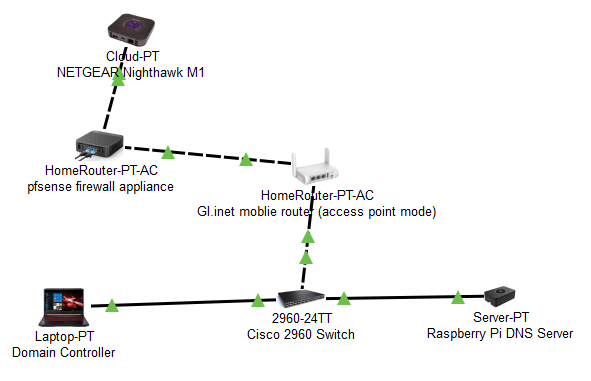
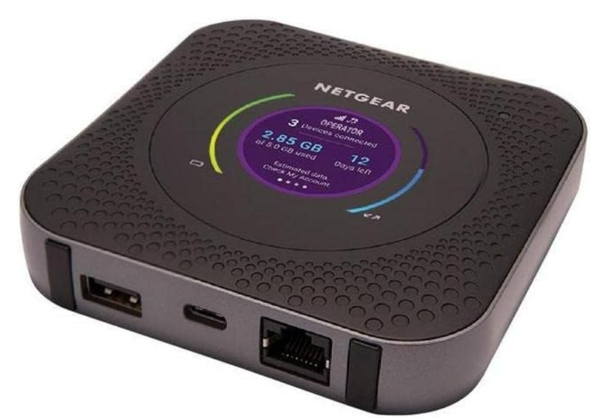
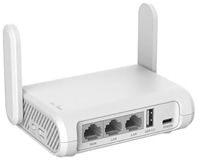
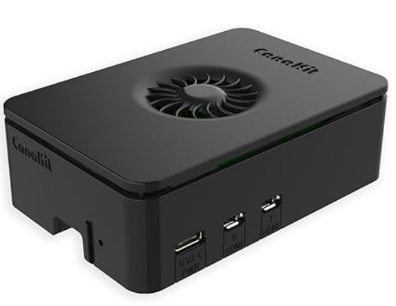
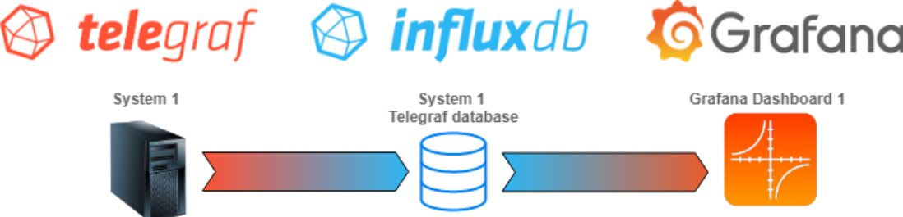

Welcome to Wi-Flight!
Wi-Flight is a compact and innovative mobile networking solution designed to provide businesses with secure, reliable, and easily deployable connectivity anywhere. Our model integrates advanced networking hardware with software management tools, ensuring seamless configuration, real-time monitoring, and robust security enforcement.
Need Support? Conversate with our AI technical assistant for all of your network needs:
Key Features
- Portable & Rapid Deployment – Easily deployable in remote or temporary locations.
- Secure Connectivity – Strong encryption, authentication, and network access controls.
- Scalable Infrastructure – Supports multiple network devices with optimized bandwidth management.
- Centralized Monitoring – Intuitive dashboard for configuration and troubleshooting for real-time network analytics.
Network Topology
Below is the network topology of the Wi-Flight project, showcasing how all devices are interconnected to provide secure, reliable, and efficient connectivity.
Network Devices Overview
NETGEAR Nighthawk M1 4G LTE WiFi Mobile Hotspot
The NETGEAR Nighthawk M1 acts as the ISP connection, providing 4G LTE internet access through an active SD card. It serves as the primary connection point for the network and is easily portable for on-the-go connectivity.
GL.iNet GL-SFT1200 Secure Travel WiFi Router
This device is set in Access Point mode, providing WiFi coverage for internal devices. Routing and security configurations are handled by the pfsense firewall appliance.
Mini PC hosting pfSense
The pfSense firewall running on a mini PC serves as the core security and routing device in the network.
Features:
- Captive Portal
- IDS/IPS
- Web filtering
- Nmap
Raspberry Pi
The Raspberry Pi is configured with Pi-hole, providing DNS ad-blocking and network-wide content filtering. It helps improve security and performance by blocking unwanted ads and harmful domains.
The NAS serves as a centralized file storage solution, allowing network-wide access to files.
Grafana Dashboard hosted on Docker
Telegraf (running on pfsense) sends data to InfluxDB thats hosted on Docker. Grafana pulls the stored data and displays in a live dashboard.
Cisco 2960X Switch
The Cisco 2960X Switch is used to connect wired devices, providing PoE and VLAN support to segment traffic. However, this switch can be easily swapped based on specific needs.

Conclusion
Wi-Flight provides a portable and secure solution to modern networking needs, allowing businesses to maintain connectivity even in remote or temporary locations. With robust security, centralized management, and ease of deployment, Wi-Flight empowers businesses to stay connected and efficient, wherever they go.